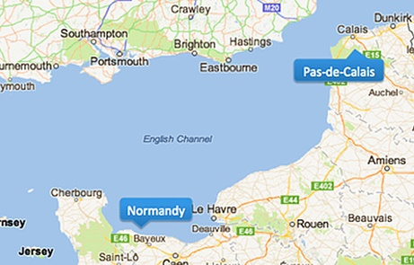
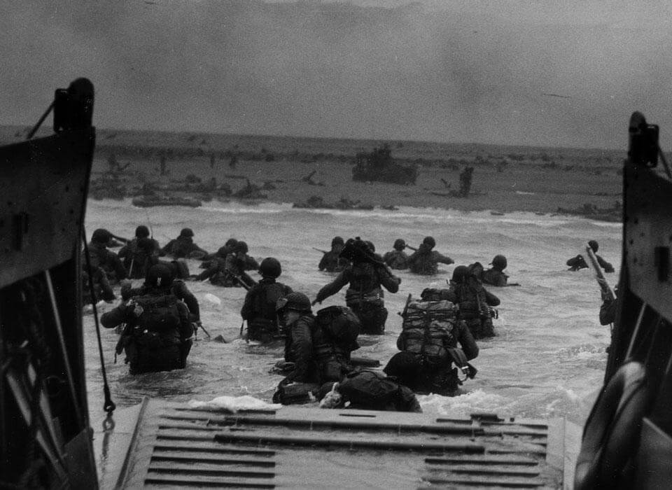
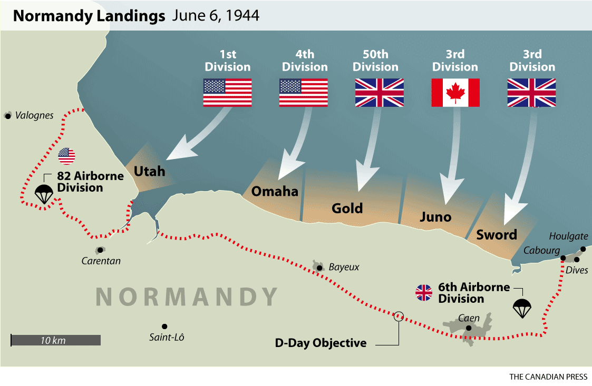
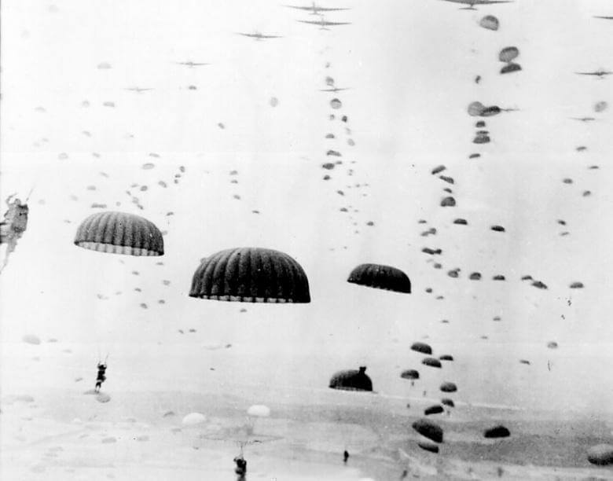

Os aliados sabiam que uma boa maneira de libertar boa parte da Europa
ocidental era uma invasão em um ponto específico, as praias da Normandia,
região da França, seriam perfeitas, mas antes, os aliados precisavam fazer
com que os alemães pensassem que eles iriam atacar em outro lugar, isso deu
início à ‘Operação Guarda-costas’, que tinha três objetivos, fazer com que os
alemães pensassem que Passo de Calais fosse o alvo da invasão, mascarar
datas e horas da suposta invasão e assim, manter os reforços alemães
naquela região.
A operação foi bem-sucedida, os alemães acreditaram e colocaram várias
tropas para vigiar aquele lugar, mas Hitler, ainda acreditava que poderia ter
uma invasão na costa atlântica, por isso, criou várias fortificações, mas ele não
sabia o local exato da invasão, seus generais ô alertavam sobre as praias da
Normandia, mas Hitler preferiu acreditar que a região de Passo de Calais seria
o alvo do ataque.

Passo de Calais, suposto local em que os aliados atacariam, veja a distância
entre
essa região com a Normandia, verdadeiro local do ataque.
Operação
Tropas desembarcando nas praias da Normandia.

No dia 04 de junho de 1944, se deu início à ‘Operação Overload’, que mais
tarde ficaria conhecido como ‘Dia
D’. 200 mil soldados
desembarcaram nas praias da
Normandia. Apesar de possuir
várias tropas alemãs na França,
elas estavam espalhadas pelo
país, por conta da operação
guarda-costas, os alemães
possuíam apenas 3 divisões de
infantarias na reggião da
Normandia.
Do lado dos aliados, eles se
dividiram em três forças,
americanas, britânicas e
canadenses e desembarcaram
em praias diferentes da região da Normandia.

Invasão aliada em pontos diferentes.
Os aliados tentaram bombardear a região, mas uma densa camada de nuvens
atrapalhou muito.
Os aliados também tinham o objetivo de capturar ou destruir 5 pontes, então,
24 mil paraquedistas saltaram naquela região (antes das tropas desembarcarem), mas alguns
paraquedistas saltaram
longe, dificultando a sua orientação, alguns paraquedistas também acabaram
morrendo afogados, pois caíram em zonas previamente alagadas pelos
alemães.

Paraquedistas durante a operação overlord.
As tropas aliadas que desembarcaram nas praias acabaram sofrendo muito
com enjoo ou por excesso de peso por causa do equipamento que carregavam
(alguns acabaram morrendo afogados). Os alemães estavam em posições
elevadas, por isso, tinham vista privilegiada dos soldados aliados, por isso,
vários acabaram morrendo pelas metralhadoras alemãs, pois eram obrigados a
correr vários metros em campo aberto, totalmente desprotegidos.
A praia de Omaha era a mais protegida, e também, geograficamente, a mais
difícil de ser atacada. Em poucas horas, cerca de 6 mil soldados acabaram
morrendo, assim que chegaram.
Na praia Gold, não foi muito diferente, os britânicos sofreram 350 baixas por
causa das artilharias alemãs, que se escondiam em bunkers espalhados pela
praia.
A praia Juno e Sword também seriam muito difíceis, 2 mil soldados foram
mortos apenas nas primeiras horas da invasão.
Hitler havia recebido relatórios sobre o ataque dos aliados, mas ele achava que
isso era apenas uma distração enquanto os aliados invadissem a região de
Passo de Calais, por causa disso, várias tropas alemãs acabaram ficando
nessas regiões e em Paris, esperando outro ataque dos aliados.
Fim da operação
Com a região da Normandia conquistada, os aliados conseguiram progredir na
França, mais tarde, junto com a resistência francesa, conseguiriam libertar
Paris.
Apesar da vitória, essa operação custou muitas vidas, só no dia D, 4 mil
soldados aliados foram mortos e 6 mil feridos, que acabariam morrendo por
causa dos ferimentos.